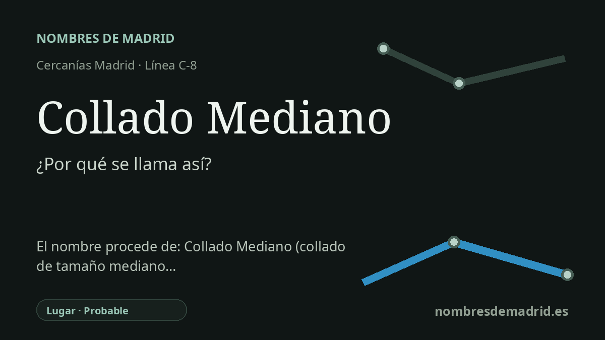

Publicado el · Investigación de Nombres de Madrid · Cómo verificamos cada origen · 11 fuentes consultadas
Respuesta rápida
La estación debe su nombre al municipio de Collado Mediano. El topónimo une collado, una elevación o paso suave de sierra, con mediano, probablemente para describir su carácter moderado o intermedio en el paisaje local del Guadarrama.
La historia del nombre
El nombre de la estación es, ante todo, geográfico: Collado Mediano es el municipio al que da servicio la parada ferroviaria. Renfe sitúa la estación en la línea Villalba-Segovia y señala que entró en funcionamiento el 1 de julio de 1888, con la apertura del tramo Villalba-Segovia de la antigua línea Villalba-Segovia-Medina del Campo. El nombre actual de Cercanías conserva, por tanto, el nombre de la villa y no conmemora a una persona ni a un acontecimiento concreto.
El topónimo anterior a la estación procede del paisaje. La Real Academia Española deriva collado del latín collis, con el sentido de colina o altura, y lo define tanto como una tierra que se levanta como un cerro menor como una depresión suave por la que se puede pasar de un lado a otro de una sierra. En un pueblo del Guadarrama, ambos sentidos son relevantes: Collado Mediano se entiende dentro de un entorno de laderas, dehesas, pasos y caminos entre valles.
El adjetivo mediano está menos fijado por las fuentes históricas. En el español común significa intermedio o moderado, ni muy grande ni muy pequeño. Por eso, la interpretación pública más prudente es la de 'el collado medio, moderado o modesto', antes que una etiqueta técnica exacta. Algunas explicaciones educativas y secundarias locales relacionan el nombre con el paso entre las cuencas del Guadarrama y del Manzanares, pero no consta una disposición primaria que cierre esa explicación.
La historia de la villa da contexto al nombre. Los relatos locales y regionales sitúan Collado Mediano en las disputas medievales entre Segovia y Madrid por la Sierra de Guadarrama y, después, dentro del Real de Manzanares. Las páginas municipales también subrayan la ganadería, la oveja y las cañadas como parte de la economía local, lo que ayuda a entender por qué las lecturas pastoriles del topónimo resultan verosímiles aunque no estén demostradas como etimología estricta.
El ferrocarril añadió una capa nueva sin cambiar el nombre. La antigua estación de piedra pasó a formar parte del paisaje alargado de la localidad junto a la calle Real, y los documentos urbanísticos municipales describen la llegada del tren en 1888 como un hito que acercó Collado Mediano a Madrid y favoreció la posterior transformación veraniega de la sierra. Por eso, el nombre de la estación está bien verificado como topónimo municipal, mientras que el matiz exacto de Mediano y la teoría del cercado ganadero deben formularse con cautela.